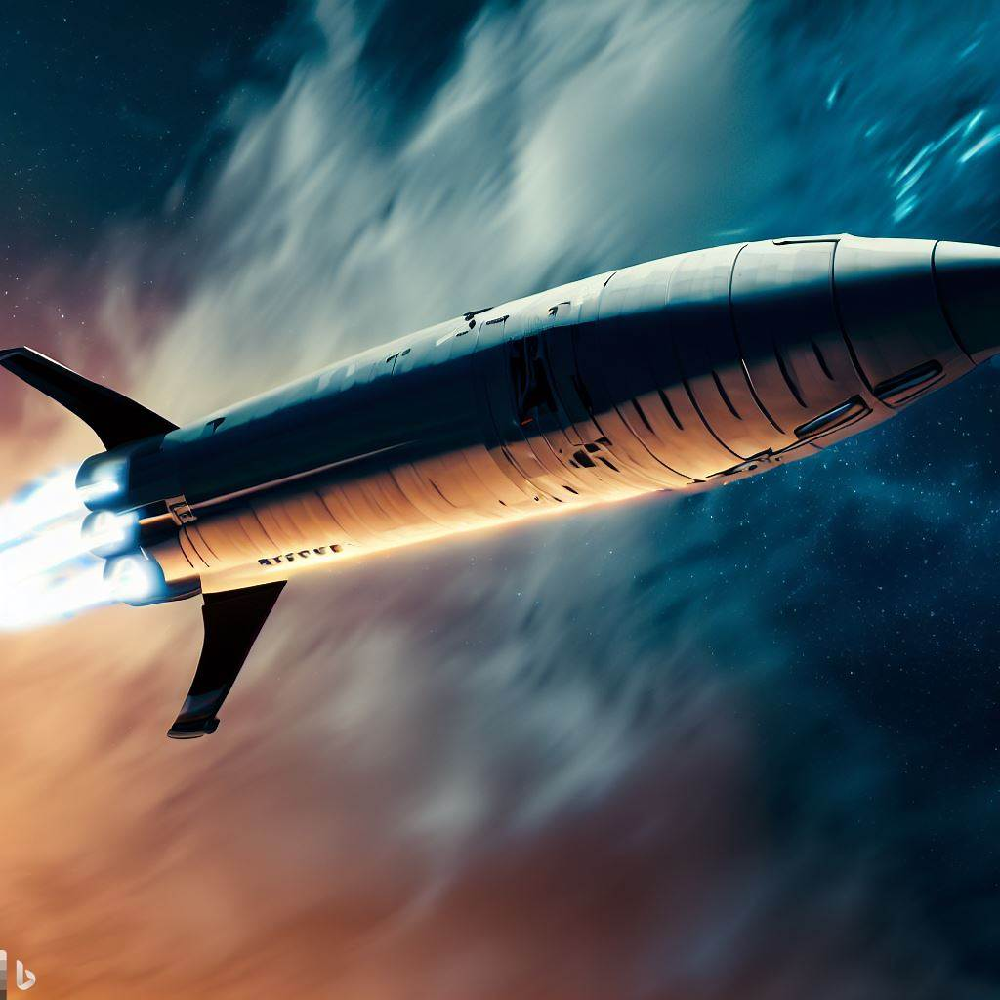

Starship: Transporte interplanetário
A SpaceX é uma das empresas pioneiras na exploração do espaço e tem como objetivo estabelecer uma presença humana em Marte. Para isso, a empresa tem desenvolvido uma série de tecnologias e estratégias para tornar a colonização do planeta vermelho possível ainda neste século.